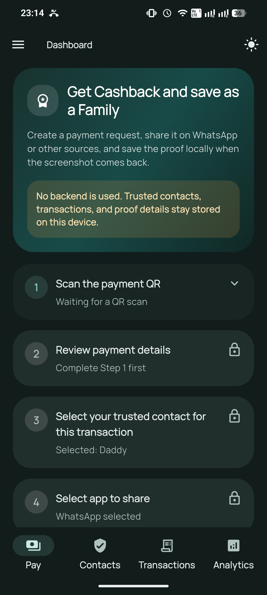
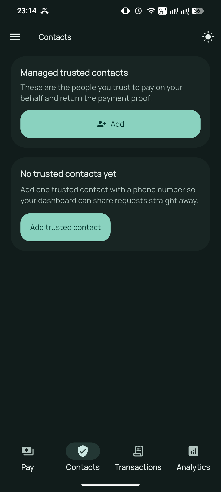
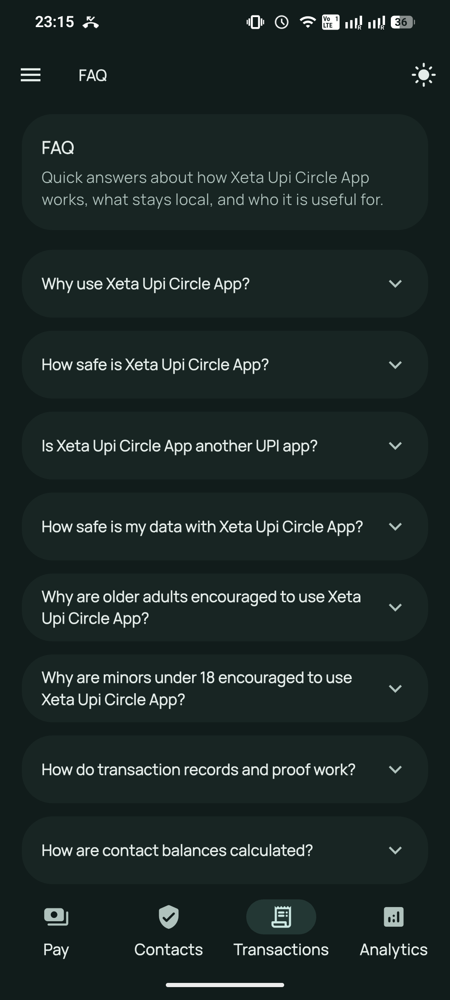
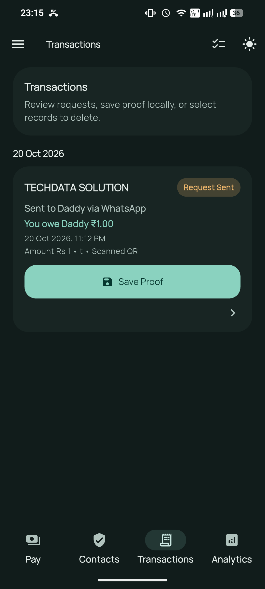
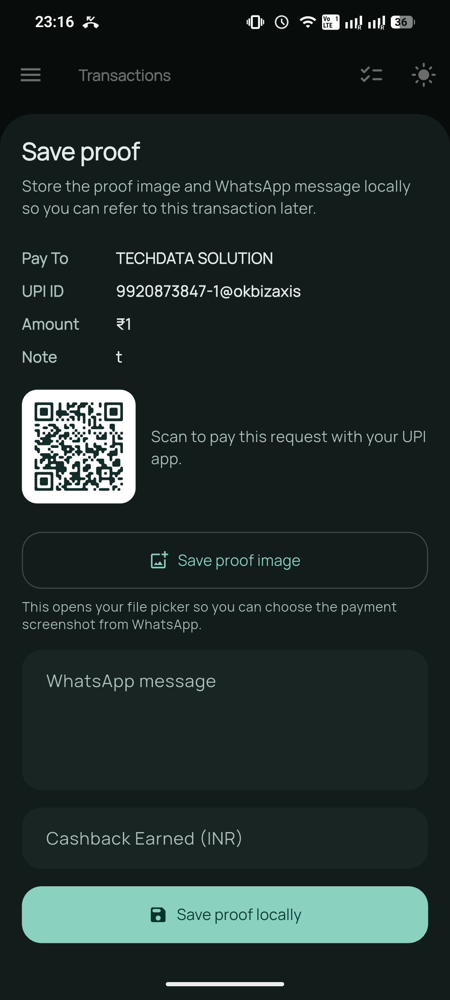
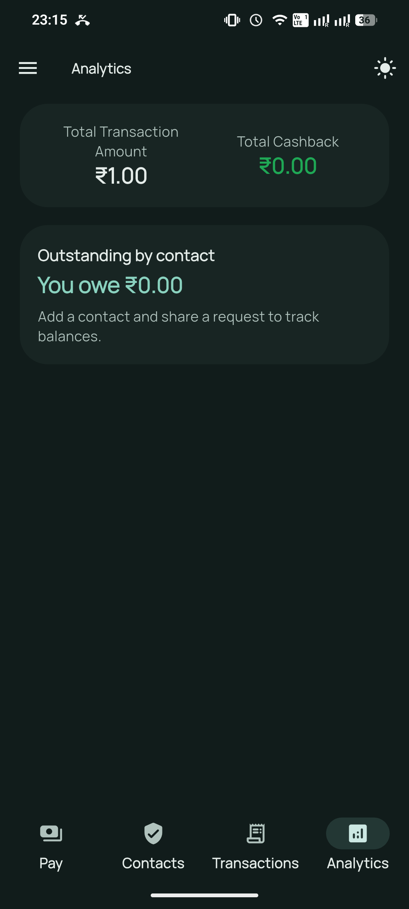

Scan a UPI QR
Read payment details from a QR code and review the payee, UPI ID, amount, and note before sharing.

A simple payment handoff for your circle
Coordinate a UPI payment request with a trusted person, then keep the request and its proof together on your device.
Made for trusted contacts
Xeta UPI Circle supports the steps around a payment. You scan and share a request, a trusted person pays using an existing UPI app, and you can keep notes or proof for later reference.
Read payment details from a QR code and review the payee, UPI ID, amount, and note before sharing.
Keep the people you coordinate with in one contact list and select who should receive each request.
Prepare a request with its QR image for WhatsApp or the standard share sheet. You choose the recipient and send it.
Review shared requests, add a proof image or message, note cashback, and record repayments.
See the totals calculated from the requests and repayments you record. These are personal tracking figures.
Switch between light and dark themes and review the permissions used for scanning and contact import.
Four clear steps
Save the name and number of the trusted person who will receive the request.
Scan the payment QR, check the details, and choose the contact for this request.
Send the prepared message and QR through WhatsApp or another app you select.
The shared request is added to Transactions. Later, attach a payment screenshot or message and add any notes you want to keep.
App preview





Your information
Trusted contacts, requests, transaction notes, and proof are stored locally. The app has no account system or app backend.
Read the full privacy policyPayment flow
Xeta UPI Circle does not process or verify payments. It helps people coordinate a request and keep their own records. You decide what to share and which app to use.
Frequently asked questions
No. It prepares and organizes payment requests. The selected trusted person completes a payment in an existing UPI app.
No. A request appears in Transactions when it is shared. You can later add a screenshot or message as your own proof record; the app does not independently verify payment status.
Your records stay local unless you choose to share a request. When you share, the payment details and QR image are passed to the app you select, which handles them under its own privacy terms.
Balances are calculated from the requests and repayments you record for each contact. They are provided for personal tracking and are not verified account balances.
Delete individual transactions in the app, clear app data in Android settings, or uninstall the app. Saved proof images are removed with their transaction when available.
Privacy and transparency
See how information is handled in the privacy policy, or browse the Xeta UPI Circle source repository.